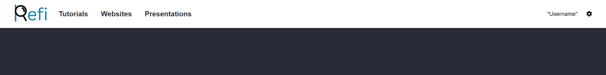
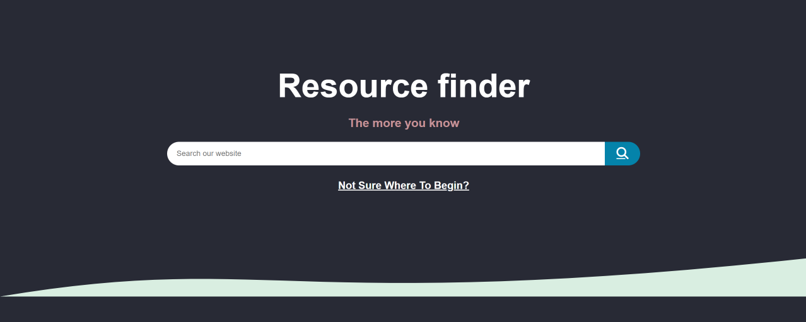
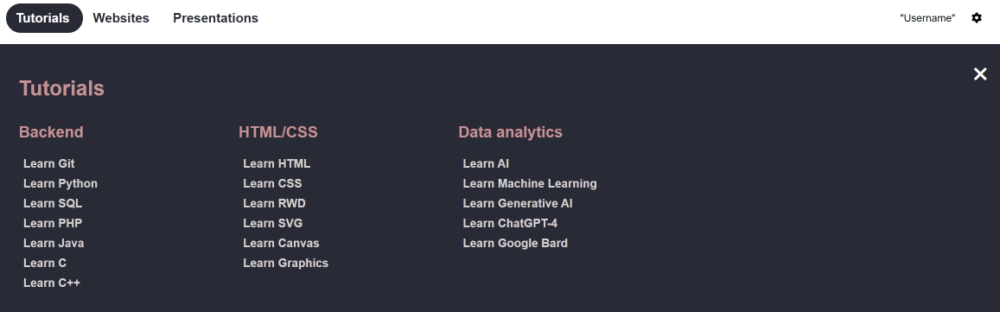
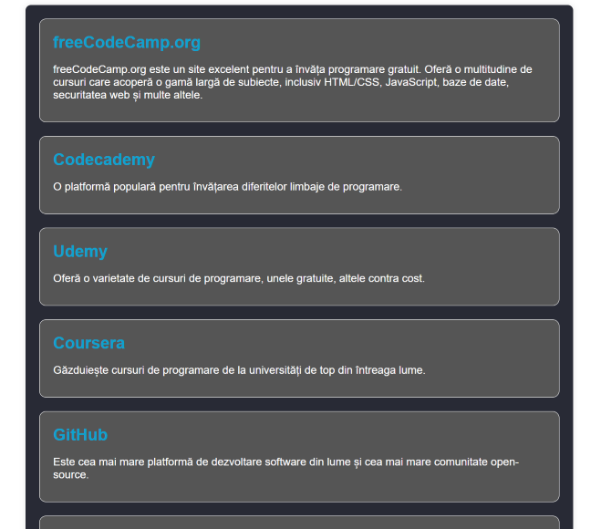
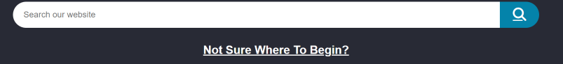
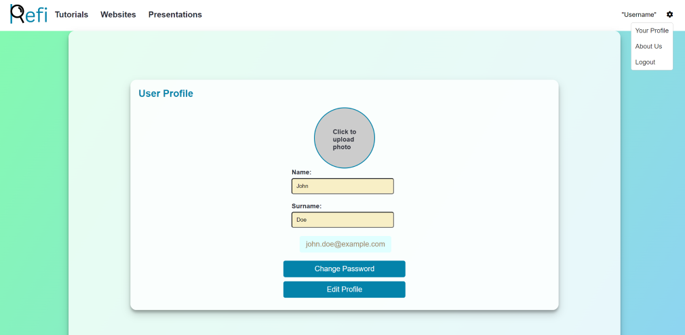

1. Introduction
Product Scope
The project aims to develop a platform called ReFi (Resource Finder), which is a web-based application offering
support to developers in collecting, interrelating, and discovering resources relevant to creative coding. These
resources include specialized websites, tutorials, multimedia presentations, source code, software projects, and
more. ReFi targets developers engaged in creative programming across various domains, catering to different
programming languages, desired outcomes, interaction methods, and other preferences.
Users of ReFi will be able to specify their purpose or preferences, such as "creating landscapes using fractals"
or "needing a polyphonic generator." Based on these inputs, the platform will recommend existing software
solutions, including frameworks, libraries, and components, necessary for realizing the desired artifact.
Additionally, ReFi will facilitate the practical use of these recommendations by providing at least three
examples of their application.
References
2. Overall Description
Product Functions
- Allows only logged users to access the site and all its' features (Registration is free)
- Provides many different opportunities to learn and develop new skills in terms of writing, understanding and
polish code
- It offers a great diversity of Learning programs such as tutorials, presentations etc.
- Users will be able to access these programs easily and without cost
- The site is user-friendly, providing a simple but robust architecture
User Classes and Characteristics
- Logged users: These are users who have registered and logged into the system. In addition to accessing the
website's features, these users can bookmark lessons and submit ideas/complaints (to admins) about a certain
topic
- Administrators: They can manage all entities, users, forms and feedback in the system.
Operating Environment
- Compatible with modern web browsers.
- Supports various operating systems (Windows, macOS, Linux, etc.).
Design and Implementation Constraints
- Utilizes JavaScript and SQL for back-end.
- Requires UTF-8 encoding for data transmission.
Assumptions and Dependencies
- Users have access to a stable internet connection.
- Users understand to keep a polite attitude when submiting feedback to admins
3. External Interface Requirements
Header: the website has different headers depending of the user(logged in / not
logged in).

HomePage: displays the functionality of our website and is user-friendly to
interact with.

Tutorials button: if the user is not logged in, the page it's inaccessible and
it will redirect the user to the Login page. If the user is logged in, then all the available tutorials will
be visible.

Websites button: if the user is not logged in, the page it's inaccessible and
it will redirect the user to the Login page. If the user is logged in, then all the learning websites
provided by our site will be visible.

Presentations button: if the user is not logged in, the page it's inaccessible
and it will redirect the user to the Login page. If the user is logged in, then all presentations available
on the site are showed.

Log in | Sign in button: allows users to create an account for surfing the
website, completly free of charge.
Not sure where to begin?: this is part of the user-friendly website as it shows
the user how to browse the website and how to interact with it.

My Account page: this allows the users to see the bookmarked lessons and also
provides some features regarding their profile (edit profile, add picture etc.)

4. System Features
User Authentication and Authorization:
Implementing a secure login system that includes password encryption and session management. This could also
include features like password recovery, email verification, and two-factor authentication.
DataBases
Each signed in user will have a unique randomly generated ID, as for the materials the site provides, they are
reviewed periodically and updated.
Search
Users can search by using the search-bar implemented in the home page to find what they want to learn but they
cannot access anything without logging in.
Data Visualization
Implementing visually appealing data visualizations to represent feedback data, such as bar charts, pie charts,
or line graphs. This can help users understand the data more intuitively and identify patterns or trends.
Social Sharing
Implementing social media sharing functionality to allow users to share feedback forms or specific responses on
platforms like Facebook, Instagram, LinkedIn.
5. Other Nonfunctional Requirements
Safety Requirements
- User anonymity must be maintained.
- Data encryption for user privacy.
Security Requirements
- Secure user authentication and authorization.